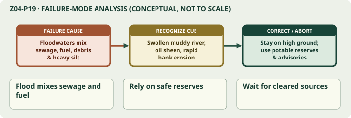

Z04-P19 · Water · New manuscript
Assess floodwater and post-storm surface sources
Avoid acute chemical, sewage and structural hazards when storm runoff transforms ordinary waterways.
When it applies · Creeks, rivers, lakes and standing water during or immediately after heavy storms, flash floods or urban flooding.
Equipment · Bottled or stored potable reserve, local water advisories and safe high-ground access.

Actions
- Stay out of active floodwater; storm surges carry raw sewage, fuel, submerged debris, agricultural chemicals and extreme turbidity that defeat routine filters.[W39, W01, W24]
- Use stored potable water, sealed commercial supplies or official distribution sites while flood conditions and utility advisories persist.[W06, W07, W14]
- Wait for official public-health clearance or safely accessible, non-flooded headwater sources before resuming routine backcountry water collection.[W39, W07, ED]
Failure recognition · Trying to filter muddy floodwater at a swollen riverbank, risking both chemical exposure and bank collapse or drowning.[W01, W24, T07]
Verify · Confirm all drinking water comes from verified potable reserves or cleared sources outside flood-impacted channels.[W06, W07, ED]
Stop or change course · Never wade into moving floodwater to reach a tap or stream, and never boil floodwater suspected of fuel or chemical contamination.[W39, W01]
Evidence and editorial notes
- T07 · FEMA · Flood Hazard Information Sheet (agency PDF)
- Section: How to stay safe when a flood threatens; take an active role · Conditions: U.S. household flood preparedness and evacuation
Support: Prepare contacts, medication and supplies. Heed evacuation instructions and avoid flooded roads.
Limitations: Six inches of moving water can knock down an adult; shallow-looking crossings hide road washouts. · Conflicting evidence: None; aligns with NWS-FLOOD.
Editorial note: Supports flood turnaround and evacuation decision thresholds. · Specialist reviewer: Emergency management
Primary source · checked 2026-11-24 - W01 · CDC · How to Make Water Safe in an Emergency (2024-09-19)
- Section: Water with fuel or toxic chemicals in it · Conditions: Suspected fuel, toxic chemicals or radioactive contamination
Support: Use a different safe supply. Standard boiling and microbial disinfection do not make this water safe.
Limitations: Does not list contaminant-specific lab remediation; applies to emergency consumer decisions only. · Conflicting evidence: None across CDC/EPA emergency guidance.
Editorial note: Used as upstream hard-stop gate prior to any field treatment card. · Specialist reviewer: Drinking-water safety and public health
Primary source · checked 2026-11-24 - W06 · CDC · How to Create an Emergency Water Supply (current web edition)
- Section: How to store emergency water; Safe storage containers · Conditions: Potable water intended for emergency storage
Support: Prefer sealed commercial water or clean food-grade tight-closing containers. Avoid containers that held toxic chemicals.
Limitations: Container shelf durability and rotation depend on plastic/material type and storage heat. · Conflicting evidence: None; reinforces strict raw-vs-clean segregation.
Editorial note: Used to enforce labeling and dedicated raw/potable vessel separation. · Specialist reviewer: Drinking-water safety and public health
Primary source · checked 2026-11-24 - W07 · CDC · Drinking Water Advisories: An Overview (current web edition)
- Section: Boil water; Do not drink; Do not use · Conditions: Public-water system advisories
Support: The notice determines safe activities. Use another source for do-not-drink notices. Do not use tap water for any purpose under a do-not-use notice unless authorities direct otherwise.
Limitations: Local utility directives supersede general field summaries. · Conflicting evidence: None; exact advisory category is authoritative.
Editorial note: Distinguishes boil-water, do-not-drink, and do-not-use actions explicitly. · Specialist reviewer: Drinking-water utility and public health
Primary source · checked 2026-11-24 - W14 · CDC · How to Create an Emergency Water Supply (current web edition)
- Section: How Much Water to Store; Rotation · Conditions: Household emergency water reserve planning
Support: Plan at least 1 gallon per person per day for at least 3 days (more for heat, illness, pregnancy, or pets); rotate self-filled water every 6 months.
Limitations: Backcountry active travel demands vary sharply by exertion, temperature, and humidity. · Conflicting evidence: None; household baseline is cited only as a planning floor, not a physiological maximum.
Editorial note: Distinguishes household storage floors from active field hydration demands. · Specialist reviewer: Household preparedness and drinking-water safety
Primary source · checked 2026-11-24 - W24 · USGS · Turbidity and Water (current web edition)
- Section: Turbidity and Water · optical definition and causes · Conditions: Cloudy, silt-laden, or storm-runoff streams and lakes
Support: Turbidity measures light scattering. Clay, silt and organic or biological material can contribute to turbidity.
Limitations: The USGS measurement is not evidence of potability, actual device clogging, or shielding magnitude. Follow validated treatment guidance. · Conflicting evidence: None; supports physical mechanism of pre-clarification.
Editorial note: Explains physical failure of filters and UV in turbid storm runoff. · Specialist reviewer: Hydrology and drinking-water treatment
Primary source · checked 2026-11-24
Current assessment · A04-W24 (2026-11-25) · Bounded support confirmed (A04): Scattering and contributors are supported. Turbidity cannot identify specific contaminants or clear potability. Limits: Specialist review PENDING (Hydrology and drinking-water treatment); publication HOLD. All release decisions pending. - W39 · CDC · Safety Guidelines: Floodwater (Updated 2026-08-24)
- Section: What floodwater can contain; driving and walking; using water after a flood · Conditions: Floods and floodwater
Support: Floodwater may contain sewage, household, medical and industrial hazardous waste, debris and downed power lines; stay out of the water and never drive or walk across flooded roads; eating or drinking anything contaminated by floodwater can cause diarrheal disease; listen to local officials on how to use water safely.
Limitations: Does not give drinking-water treatment steps; local officials decide. · Conflicting evidence: None.
Editorial note: Added in W2C-B08. · Specialist reviewer: Emergency management and public health
Primary source · checked 2026-11-28
Current assessment · W2C-E048-W39 (2026-11-28) · Bounded primary support recorded: Ground W2C-B08 plates Z13-P43 and Z04-P19. Limits: Regional (MDH) and national (EPA, CDC) guidance; local officials decide after floods.
Source lineage · CDC emergency water and NWS flood guidance; new manuscript · Classification · New manuscript.